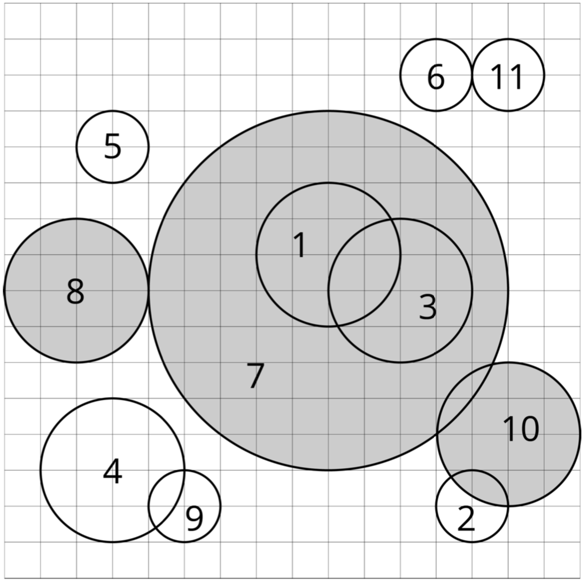

在平面上，有 $n$ 个圆，记为 $c_1,c_2,...,c_n$。我们尝试对这些圆运行这个算法：

当 $c_i$ 被删除时，若循环中第 1 步选择的圆是 $c_j$，我们说 $c_i$ 被 $c_j$ 删除。对于每个圆，求出它是被哪一个圆删除的。
第一行包含一个整数 $n$，表示开始时平面上圆的数量 $(1≤n≤3×10^5)$。接下来 $n$ 行 ， 每行包含三个整数 $x_i,y_i,r_i$ 依次描述圆 $c_i$ 圆心的 $x$ 坐标、$y$ 坐标和它的半径 $(−10^9≤x_i,y_i≤10^9,1≤r_i≤10^9)$。
输出一行，包含 $n$ 个整数 $a_1,a_2,...,a_n$，其中 $a_i$ 表示圆 $c_i$ 是被圆 $c_{a_i}$ 删除的。
11 9 9 2 13 2 1 11 8 2 3 3 2 3 12 1 12 14 1 9 8 5 2 8 2 5 2 1 14 4 2 14 14 1
7 2 7 4 5 6 7 7 4 7 6
子任务（comet 不支持APIO评分方式）
 Comet OJ
Comet OJ